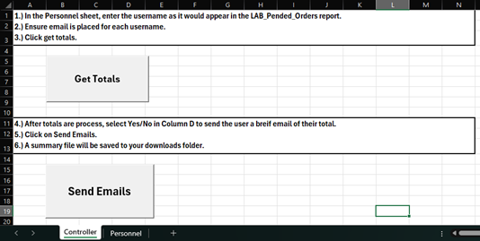
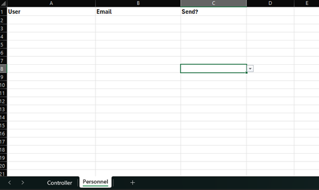

Every two weeks, Epic exports orders placed by each user. Tracking totals required filtering, totaling, and emailing each employee—a time-consuming manual process.
Solution
Created a tool to maintain a roster of Call Center employees with emails and a send/not-send flag.
Automatically totals orders from the Epic export and outputs results to a summary sheet.
Optionally auto-generates and sends individualized emails with the totals for the period.
Impact
Cut reporting time from ~3 hours every two weeks to under ~20 minutes.

Sheet used to generate report.

Sheet used to store tech information.